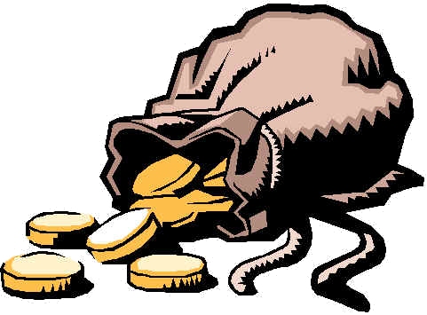

[ → afficher équipe] |   Les chèvres électriques |
[+3] |
[+3] |
[+0] / [+0] |
[+6] |
↑ +1 [ → afficher équipe] |   Les Bross Strogonoff |
[+1] |
[+7] |
[+0] / [+0] |
[+8] |
↑ +1 [ → afficher équipe] |  Les Chou Canadiens Chou !!! |
[+1] |
[+3] |
[+0] / [+0] |
[+4] |
↑ +1 [ → afficher équipe] |   Les Huards |
[+3] |
[+5] |
[+0] / [+0] |
[+8] |
↑ +1 [ → afficher équipe] |   HC Notarius de Sorel-Tracy |
[+5] |
[+3] |
[+0] / [+0] |
[+8] |
↑ +1 [ → afficher équipe] |  Sherby |
[+4] |
[+4] |
[+0] / [+0] |
[+8] |
↑ +1 [ → afficher équipe] |   Les Baconators |
[+1] |
[+6] |
[+0] / [+0] |
[+7] |
↑ +1 [ → afficher équipe] |   Les Rhinos |
[+1] |
[+5] |
[+0] / [+0] |
[+6] |
↑ +1 [ → afficher équipe] | Les Kodiaks |
[+3] |
[+4] |
[+0] / [+0] |
[+7] |
↑ +1 [ → afficher équipe] |   Dream Team |
[+4] |
[+2] |
[+0] / [+0] |
[+6] |
↑ +1 [ → afficher équipe] |  The Knitting Yoginis |
[+2] |
[+4] |
[+0] / [+0] |
[+6] |
↑ +2 [ → afficher équipe] |  Les Mandrilles de Sainte-Julie |
[+3] |
[+3] |
[+1] / [+0] |
[+7] |
↑ +2 [ → afficher équipe] |   Les Ducks |
[+1] |
[+5] |
[+0] / [+0] |
[+6] |
↑ +2 [ → afficher équipe] |  Lego Team |
[+4] |
[+4] |
[+1] / [+0] |
[+9] |
↑ +4 [ → afficher équipe] |  Les Pouliches de Québec |
[+5] |
[+5] |
[+0] / [+0] |
[+10] |
↑ +2 [ → afficher équipe] |   Emile Butch Comeau |
[+0] |
[+6] |
[+0] / [+0] |
[+6] |
↑ +2 [ → afficher équipe] |  Maman Girafe |
[+1] |
[+2] |
[+0] / [+0] |
[+3] |
↑ +3 [ → afficher équipe] |  La ville des Champions |
[+3] |
[+3] |
[+0] / [+0] |
[+6] |
↑ +3 [ → afficher équipe] |   Attaboy |
[+1] |
[+4] |
[+0] / [+0] |
[+5] |
↑ +3 [ → afficher équipe] | Les Trolls |
[+2] |
[+4] |
[+0] / [+0] |
[+6] |
</i>")

|
| ||||||||||||||||||||||||||||||||||||||||||||||||||||||||||||||||||||||||||||||||||||||||||||||||||||||||||||||||||||||||||||||||||||||||||||||||||||||||||||||||||||||||||||||||||||||||||||||||||||||||||||||||||||||||||||
|
| ||||||||||||||||||||||||||||||||||||||||||||||||||||||||||||||||||||||||||||||||||||||||||||||||||||||||||||||||||||||||||||||||||||||||||||||||||||||||||||||||||||||||||||||||||||||||||||||||||||||||||||||||||||||||||||
|
| |||||||||||||||||||||||||||||||||||||||||||||||||||||||||||||||||||||||||||||||||||||||||||||


|
| ||||||||||||||||||||||||||||||||||||||||||||||||||||||||||||||||||||||||||||||||||||||||||||||||||||||||||||||||||||||||||||||||


|
| ||||||||||||||||||||||||||||||||||||||||||||||||||||||||||||||||||||||||||||||||||||||||||||||||||||||||||||||||||||||||||||||||


|
| |||||||||||||||||||||||||||||||||||||||||||||||||||||||||||||||||||||||||||||||


La ville des Champions | John Tavares G:9 +1, P:16 +1, Pts:25 +2 Blessé Day-To-Day  did not practice Wednesday, Arthur Staple of Newsday reports. <i>- (Nov 13)</i>") | Jonathan Toews G:9 , P:9 , Pts:18 | Taylor Hall G:5 , P:8 +1, Pts:13 +1 | |
| Nazem Kadri G:5 , P:9 , Pts:14 Blessé Suspension | Eric Staal G:5 +1, P:6 , Pts:11 +1 | Matt Duchene G:12 , P:8 , Pts:20 Blessé Day-To-Day | ||
| Jordan Eberle G:5 +1, P:11 , Pts:16 +1 | Jason Spezza G:9 , P:9 , Pts:18 | Brad Marchand G:3 , P:4 , Pts:7 | ||
| Evander Kane G:6 , P:6 , Pts:12 | Jarome Iginla G:4 , P:7 , Pts:11 | Patrice Bergeron G:6 , P:5 , Pts:11 | ||
| David Krejci G:3 , P:13 , Pts:16 | Loui Eriksson G:4 , P:5 , Pts:9 | Nail Yakupov G:3 , P:3 +1, Pts:6 +1 | ||
| Erik Karlsson G:6 , P:13 , Pts:19 | Zdeno Chara G:3 , P:4 , Pts:7 | Torey Krug G:6 , P:6 , Pts:12 | ||
| Tuuka Rask W:10 , SO:2 , Pts:14 | Craig Anderson W:5 , SO:1 , Pts:7 | Sergei Bobrovsky W:5 , SO:0 , Pts:5 | ||
The Knitting Yoginis | Steven Stamkos G:14 , P:9 , Pts:23 | Jonathan Toews G:9 , P:9 , Pts:18 | Phil Kessel G:10 , P:9 , Pts:19 | |
| Henrik Zetterberg G:10 , P:13 +2, Pts:23 +2 | Eric Staal G:5 +1, P:6 , Pts:11 +1 | Jakub Voracek G:3 , P:6 , Pts:9 | ||
| Zach Parise G:10 , P:7 , Pts:17 | Corey Perry G:12 , P:11 , Pts:23 Blessé Day-To-Day | Brad Marchand G:3 , P:4 , Pts:7 | ||
| Evander Kane G:6 , P:6 , Pts:12 | Jarome Iginla G:4 , P:7 , Pts:11 | Patrice Bergeron G:6 , P:5 , Pts:11 | ||
| Joe Pavelski G:7 , P:14 , Pts:21 | Ryan Nugent-Hopkins G:5 , P:8 , Pts:13 | Nail Yakupov G:3 , P:3 +1, Pts:6 +1 | ||
| Erik Karlsson G:6 , P:13 , Pts:19 | Shea Weber G:5 +1, P:5 +1, Pts:10 +2 | Torey Krug G:6 , P:6 , Pts:12 | ||
| Tuuka Rask W:10 , SO:2 , Pts:14 | Jimmy Howard W:5 , SO:1 , Pts:7 | Sergei Bobrovsky W:5 , SO:0 , Pts:5 | ||
Lego Team | Sidney Crosby G:9 , P:16 , Pts:25 | Claude Giroux G:1 , P:10 , Pts:11 | Pavel Datsyuk G:11 +2, P:11 , Pts:22 +2 | |
| Henrik Zetterberg G:10 , P:13 +2, Pts:23 +2 | Eric Staal G:5 +1, P:6 , Pts:11 +1 | Alexander Semin G:3 , P:6 , Pts:9 Blessé Day-To-Day | ||
| Zach Parise G:10 , P:7 , Pts:17 | Corey Perry G:12 , P:11 , Pts:23 Blessé Day-To-Day | Brad Marchand G:3 , P:4 , Pts:7 | ||
| Brad Richards G:6 , P:10 +1, Pts:16 +1 | Cody Hodgson G:7 , P:9 +1, Pts:16 +1 | Rene Bourque G:5 , P:1 , Pts:6 | ||
| David Krejci G:3 , P:13 , Pts:16 | Loui Eriksson G:4 , P:5 , Pts:9 | Ryan Callahan G:6 +1, P:2 , Pts:8 +1 | ||
| Ryan Suter G:0 , P:12 , Pts:12 | Zdeno Chara G:3 , P:4 , Pts:7 | Torey Krug G:6 , P:6 , Pts:12 | ||
| Tuuka Rask W:10 , SO:2 , Pts:14 | Craig Anderson W:5 , SO:1 , Pts:7 | Mike Smith W:12 +1, SO:0 , Pts:12 | ||
Les Pouliches de Québec | John Tavares G:9 +1, P:16 +1, Pts:25 +2 Blessé Day-To-Day | Claude Giroux G:1 , P:10 , Pts:11 | Pavel Datsyuk G:11 +2, P:11 , Pts:22 +2 | |
| Rick Nash G:0 , P:3 , Pts:3 Blessé IR | Matt Moulson G:8 , P:10 +1, Pts:18 +1 | Jakub Voracek G:3 , P:6 , Pts:9 | ||
| Logan Couture G:8 , P:12 , Pts:20 | Jason Spezza G:9 , P:9 , Pts:18 | Sam Gagner G:0 , P:3 +1, Pts:3 +1 | ||
| Daniel Briere G:2 , P:3 , Pts:5 | Cody Hodgson G:7 , P:9 +1, Pts:16 +1 | Patrice Bergeron G:6 , P:5 , Pts:11 | ||
| Joe Pavelski G:7 , P:14 , Pts:21 | Ryan Nugent-Hopkins G:5 , P:8 , Pts:13 | Ryan Callahan G:6 +1, P:2 , Pts:8 +1 | ||
| Erik Karlsson G:6 , P:13 , Pts:19 | Shea Weber G:5 +1, P:5 +1, Pts:10 +2 | Dustin Byfuglien G:3 , P:11 , Pts:14 | ||
| Jonathan Quick W:10 , SO:1 , Pts:12 Blessé Day-To-Day | Craig Anderson W:5 , SO:1 , Pts:7 | Marc-Andre Fleury W:11 , SO:1 , Pts:13 | ||
Les Mandrilles de Sainte-Julie | Sidney Crosby G:9 , P:16 , Pts:25 | Alexander Ovechkin G:15 , P:7 , Pts:22 | Pavel Datsyuk G:11 +2, P:11 , Pts:22 +2 | |
| Rick Nash G:0 , P:3 , Pts:3 Blessé IR | Mike Ribeiro G:6 +1, P:10 +1, Pts:16 +2 | Matt Duchene G:12 , P:8 , Pts:20 Blessé Day-To-Day | ||
| Zach Parise G:10 , P:7 , Pts:17 | Marian Hossa G:9 , P:6 , Pts:15 Blessé Day-To-Day | Brad Marchand G:3 , P:4 , Pts:7 | ||
| Evander Kane G:6 , P:6 , Pts:12 | Jarome Iginla G:4 , P:7 , Pts:11 | Patrice Bergeron G:6 , P:5 , Pts:11 | ||
| David Krejci G:3 , P:13 , Pts:16 | Vincent Lecavalier G:7 , P:3 , Pts:10 | Nail Yakupov G:3 , P:3 +1, Pts:6 +1 | ||
| P.K. Subban G:3 , P:14 , Pts:17 | Duncan Keith G:1 , P:14 +1, Pts:15 +1 | Justin Schultz G:1 , P:6 , Pts:7 Blessé IR | ||
| Anti Niemi W:10 , SO:2 , Pts:14 | Roberto Luongo W:9 , SO:2 , Pts:13 | Mike Smith W:12 +1, SO:0 , Pts:12 | ||
Dream Team | Sidney Crosby G:9 , P:16 , Pts:25 | Alexander Ovechkin G:15 , P:7 , Pts:22 | Pavel Datsyuk G:11 +2, P:11 , Pts:22 +2 | |
| Rick Nash G:0 , P:3 , Pts:3 Blessé IR | Eric Staal G:5 +1, P:6 , Pts:11 +1 | Matt Duchene G:12 , P:8 , Pts:20 Blessé Day-To-Day | ||
| Andrew Ladd G:5 , P:12 , Pts:17 | Jason Spezza G:9 , P:9 , Pts:18 | PA Parenteau G:6 , P:7 +1, Pts:13 +1 | ||
| Jiri Tlusty G:3 , P:3 , Pts:6 | Jeff Carter G:5 , P:4 , Pts:9 Blessé IR | Patrice Bergeron G:6 , P:5 , Pts:11 | ||
| Jason Pominville G:12 , P:4 , Pts:16 | Loui Eriksson G:4 , P:5 , Pts:9 | Alex Galchenyuk G:4 , P:11 , Pts:15 | ||
| P.K. Subban G:3 , P:14 , Pts:17 | Shea Weber G:5 +1, P:5 +1, Pts:10 +2 | Dustin Byfuglien G:3 , P:11 , Pts:14 | ||
| Corey Crawford W:12 , SO:0 , Pts:12 | Carey Price W:7 , SO:1 , Pts:9 | Marc-Andre Fleury W:11 , SO:1 , Pts:13 | ||
Sherby | Steven Stamkos G:14 , P:9 , Pts:23 | Alexander Ovechkin G:15 , P:7 , Pts:22 | Pavel Datsyuk G:11 +2, P:11 , Pts:22 +2 | |
| Henrik Zetterberg G:10 , P:13 +2, Pts:23 +2 | Mike Ribeiro G:6 +1, P:10 +1, Pts:16 +2 | Jakub Voracek G:3 , P:6 , Pts:9 | ||
| Andrew Ladd G:5 , P:12 , Pts:17 | Corey Perry G:12 , P:11 , Pts:23 Blessé Day-To-Day | Brad Marchand G:3 , P:4 , Pts:7 | ||
| Brad Richards G:6 , P:10 +1, Pts:16 +1 | Max Pacioretty G:2 , P:2 , Pts:4 | Patrice Bergeron G:6 , P:5 , Pts:11 | ||
| David Krejci G:3 , P:13 , Pts:16 | David Backes G:8 +1, P:12 , Pts:20 +1 | Alex Galchenyuk G:4 , P:11 , Pts:15 | ||
| P.K. Subban G:3 , P:14 , Pts:17 | Andrei Markov G:2 , P:9 , Pts:11 | Torey Krug G:6 , P:6 , Pts:12 | ||
| Henrik Lundqvist W:6 , SO:2 , Pts:10 | Jimmy Howard W:5 , SO:1 , Pts:7 | Sergei Bobrovsky W:5 , SO:0 , Pts:5 | ||
Les chèvres électriques | Sidney Crosby G:9 , P:16 , Pts:25 | Martin St.Louis G:8 , P:12 +1, Pts:20 +1 | Pavel Datsyuk G:11 +2, P:11 , Pts:22 +2 | |
| Daniel Sedin G:7 , P:10 , Pts:17 | Anze Kopitar G:5 , P:14 , Pts:19 | Joe Thornton G:2 , P:20 , Pts:22 | ||
| Jordan Eberle G:5 +1, P:11 , Pts:16 +1 | Corey Perry G:12 , P:11 , Pts:23 Blessé Day-To-Day | PA Parenteau G:6 , P:7 +1, Pts:13 +1 | ||
| Evander Kane G:6 , P:6 , Pts:12 | Max Pacioretty G:2 , P:2 , Pts:4 | Bobby Ryan G:10 , P:10 , Pts:20 Blessé Day-To-Day | ||
| Jason Pominville G:12 , P:4 , Pts:16 | Loui Eriksson G:4 , P:5 , Pts:9 | Alex Galchenyuk G:4 , P:11 , Pts:15 | ||
| P.K. Subban G:3 , P:14 , Pts:17 | Duncan Keith G:1 , P:14 +1, Pts:15 +1 | Dustin Byfuglien G:3 , P:11 , Pts:14 | ||
| Jonathan Quick W:10 , SO:1 , Pts:12 Blessé Day-To-Day | Carey Price W:7 , SO:1 , Pts:9 | Sergei Bobrovsky W:5 , SO:0 , Pts:5 | ||
Les Kodiaks | Evgeni Malkin G:3 , P:15 , Pts:18 | Ryan Getzlaf G:10 , P:13 , Pts:23 Blessé Day-To-Day | Pavel Datsyuk G:11 +2, P:11 , Pts:22 +2 | |
| Rick Nash G:0 , P:3 , Pts:3 Blessé IR | Anze Kopitar G:5 , P:14 , Pts:19 | Alexander Semin G:3 , P:6 , Pts:9 Blessé Day-To-Day | ||
| Jordan Eberle G:5 +1, P:11 , Pts:16 +1 | Jason Spezza G:9 , P:9 , Pts:18 | PA Parenteau G:6 , P:7 +1, Pts:13 +1 | ||
| Mikko Koivu G:2 , P:13 , Pts:15 | Jarome Iginla G:4 , P:7 , Pts:11 | Tyler Seguin G:12 , P:10 , Pts:22 | ||
| David Krejci G:3 , P:13 , Pts:16 | Ryan Nugent-Hopkins G:5 , P:8 , Pts:13 | Alex Galchenyuk G:4 , P:11 , Pts:15 | ||
| P.K. Subban G:3 , P:14 , Pts:17 | Duncan Keith G:1 , P:14 +1, Pts:15 +1 | Cody Franson G:0 , P:12 +2, Pts:12 +2 | ||
| Henrik Lundqvist W:6 , SO:2 , Pts:10 | Craig Anderson W:5 , SO:1 , Pts:7 | Sergei Bobrovsky W:5 , SO:0 , Pts:5 | ||
Les Huards | John Tavares G:9 +1, P:16 +1, Pts:25 +2 Blessé Day-To-Day | Martin St.Louis G:8 , P:12 +1, Pts:20 +1 | Taylor Hall G:5 , P:8 +1, Pts:13 +1 | |
| Rick Nash G:0 , P:3 , Pts:3 Blessé IR | Anze Kopitar G:5 , P:14 , Pts:19 | Matt Duchene G:12 , P:8 , Pts:20 Blessé Day-To-Day | ||
| Jordan Eberle G:5 +1, P:11 , Pts:16 +1 | Jason Spezza G:9 , P:9 , Pts:18 | PA Parenteau G:6 , P:7 +1, Pts:13 +1 | ||
| Daniel Briere G:2 , P:3 , Pts:5 | Jamie Benn G:7 , P:15 , Pts:22 | Patrice Bergeron G:6 , P:5 , Pts:11 | ||
| David Krejci G:3 , P:13 , Pts:16 | David Backes G:8 +1, P:12 , Pts:20 +1 | Mike Richards G:5 , P:12 , Pts:17 | ||
| Erik Karlsson G:6 , P:13 , Pts:19 | Duncan Keith G:1 , P:14 +1, Pts:15 +1 | Alexander Edler G:2 , P:4 , Pts:6 | ||
| Tuuka Rask W:10 , SO:2 , Pts:14 | Jimmy Howard W:5 , SO:1 , Pts:7 | Marc-Andre Fleury W:11 , SO:1 , Pts:13 | ||
Emile Butch Comeau | Sidney Crosby G:9 , P:16 , Pts:25 | Alexander Ovechkin G:15 , P:7 , Pts:22 | Phil Kessel G:10 , P:9 , Pts:19 | |
| Thomas Vanek G:5 , P:7 , Pts:12 Blessé Day-To-Day | Matt Moulson G:8 , P:10 +1, Pts:18 +1 | Jakub Voracek G:3 , P:6 , Pts:9 | ||
| Derek Stepan G:4 , P:10 +1, Pts:14 +1 | Jason Spezza G:9 , P:9 , Pts:18 | Chris Stewart G:3 , P:4 +1, Pts:7 +1 | ||
| Brad Richards G:6 , P:10 +1, Pts:16 +1 | Max Pacioretty G:2 , P:2 , Pts:4 | Patrice Bergeron G:6 , P:5 , Pts:11 | ||
| David Desharnais G:0 , P:1 , Pts:1 | Lars Eller G:7 , P:6 , Pts:13 | Alex Galchenyuk G:4 , P:11 , Pts:15 | ||
| P.K. Subban G:3 , P:14 , Pts:17 | Andrei Markov G:2 , P:9 , Pts:11 | Cody Franson G:0 , P:12 +2, Pts:12 +2 | ||
| Corey Crawford W:12 , SO:0 , Pts:12 | Carey Price W:7 , SO:1 , Pts:9 | Marc-Andre Fleury W:11 , SO:1 , Pts:13 | ||
HC Notarius de Sorel-Tracy | Sidney Crosby G:9 , P:16 , Pts:25 | Jonathan Toews G:9 , P:9 , Pts:18 | Pavel Datsyuk G:11 +2, P:11 , Pts:22 +2 | |
| Henrik Zetterberg G:10 , P:13 +2, Pts:23 +2 | Eric Staal G:5 +1, P:6 , Pts:11 +1 | Joe Thornton G:2 , P:20 , Pts:22 | ||
| Zach Parise G:10 , P:7 , Pts:17 | Jason Spezza G:9 , P:9 , Pts:18 | Pascal Dupuis G:3 , P:9 , Pts:12 | ||
| Mikko Koivu G:2 , P:13 , Pts:15 | Max Pacioretty G:2 , P:2 , Pts:4 | Bobby Ryan G:10 , P:10 , Pts:20 Blessé Day-To-Day | ||
| Joe Pavelski G:7 , P:14 , Pts:21 | Vincent Lecavalier G:7 , P:3 , Pts:10 | Ryan Callahan G:6 +1, P:2 , Pts:8 +1 | ||
| P.K. Subban G:3 , P:14 , Pts:17 | Shea Weber G:5 +1, P:5 +1, Pts:10 +2 | Alexander Edler G:2 , P:4 , Pts:6 | ||
| Tuuka Rask W:10 , SO:2 , Pts:14 | Carey Price W:7 , SO:1 , Pts:9 | Sergei Bobrovsky W:5 , SO:0 , Pts:5 | ||
Les Baconators | Sidney Crosby G:9 , P:16 , Pts:25 | Alexander Ovechkin G:15 , P:7 , Pts:22 | Taylor Hall G:5 , P:8 +1, Pts:13 +1 | |
| Henrik Zetterberg G:10 , P:13 +2, Pts:23 +2 | Anze Kopitar G:5 , P:14 , Pts:19 | Jakub Voracek G:3 , P:6 , Pts:9 | ||
| Jordan Eberle G:5 +1, P:11 , Pts:16 +1 | Corey Perry G:12 , P:11 , Pts:23 Blessé Day-To-Day | Chris Stewart G:3 , P:4 +1, Pts:7 +1 | ||
| Evander Kane G:6 , P:6 , Pts:12 | Max Pacioretty G:2 , P:2 , Pts:4 | Bobby Ryan G:10 , P:10 , Pts:20 Blessé Day-To-Day | ||
| David Krejci G:3 , P:13 , Pts:16 | Ryan Nugent-Hopkins G:5 , P:8 , Pts:13 | Nail Yakupov G:3 , P:3 +1, Pts:6 +1 | ||
| P.K. Subban G:3 , P:14 , Pts:17 | Duncan Keith G:1 , P:14 +1, Pts:15 +1 | Justin Schultz G:1 , P:6 , Pts:7 Blessé IR | ||
| Tuuka Rask W:10 , SO:2 , Pts:14 | Carey Price W:7 , SO:1 , Pts:9 | Marc-Andre Fleury W:11 , SO:1 , Pts:13 | ||
Les Bross Strogonoff | Sidney Crosby G:9 , P:16 , Pts:25 | Martin St.Louis G:8 , P:12 +1, Pts:20 +1 | Nicklas Backstrom G:5 , P:16 , Pts:21 | |
| Henrik Zetterberg G:10 , P:13 +2, Pts:23 +2 | Matt Moulson G:8 , P:10 +1, Pts:18 +1 | Matt Duchene G:12 , P:8 , Pts:20 Blessé Day-To-Day | ||
| Zach Parise G:10 , P:7 , Pts:17 | Jason Spezza G:9 , P:9 , Pts:18 | PA Parenteau G:6 , P:7 +1, Pts:13 +1 | ||
| Mikko Koivu G:2 , P:13 , Pts:15 | Jamie Benn G:7 , P:15 , Pts:22 | Tyler Seguin G:12 , P:10 , Pts:22 | ||
| Jason Pominville G:12 , P:4 , Pts:16 | Loui Eriksson G:4 , P:5 , Pts:9 | Nail Yakupov G:3 , P:3 +1, Pts:6 +1 | ||
| Erik Karlsson G:6 , P:13 , Pts:19 | Shea Weber G:5 +1, P:5 +1, Pts:10 +2 | Justin Schultz G:1 , P:6 , Pts:7 Blessé IR | ||
| Corey Crawford W:12 , SO:0 , Pts:12 | Craig Anderson W:5 , SO:1 , Pts:7 | Sergei Bobrovsky W:5 , SO:0 , Pts:5 | ||
Les Chou Canadiens Chou !!! | Sidney Crosby G:9 , P:16 , Pts:25 | Alexander Ovechkin G:15 , P:7 , Pts:22 | Henrik Sedin G:3 , P:18 , Pts:21 | |
| Daniel Sedin G:7 , P:10 , Pts:17 | Chris Kunitz G:9 +1, P:8 , Pts:17 +1 | Matt Duchene G:12 , P:8 , Pts:20 Blessé Day-To-Day | ||
| Zach Parise G:10 , P:7 , Pts:17 | James Neal G:1 , P:2 , Pts:3 | Pascal Dupuis G:3 , P:9 , Pts:12 | ||
| Brad Richards G:6 , P:10 +1, Pts:16 +1 | Jamie Benn G:7 , P:15 , Pts:22 | Patrice Bergeron G:6 , P:5 , Pts:11 | ||
| David Krejci G:3 , P:13 , Pts:16 | Loui Eriksson G:4 , P:5 , Pts:9 | Nail Yakupov G:3 , P:3 +1, Pts:6 +1 | ||
| Erik Karlsson G:6 , P:13 , Pts:19 | Duncan Keith G:1 , P:14 +1, Pts:15 +1 | Dustin Byfuglien G:3 , P:11 , Pts:14 | ||
| Henrik Lundqvist W:6 , SO:2 , Pts:10 | Roberto Luongo W:9 , SO:2 , Pts:13 | Marc-Andre Fleury W:11 , SO:1 , Pts:13 | ||
Maman Girafe | Sidney Crosby G:9 , P:16 , Pts:25 | Alexander Ovechkin G:15 , P:7 , Pts:22 | Nicklas Backstrom G:5 , P:16 , Pts:21 | |
| Rick Nash G:0 , P:3 , Pts:3 Blessé IR | Eric Staal G:5 +1, P:6 , Pts:11 +1 | Jakub Voracek G:3 , P:6 , Pts:9 | ||
| Logan Couture G:8 , P:12 , Pts:20 | James Neal G:1 , P:2 , Pts:3 | PA Parenteau G:6 , P:7 +1, Pts:13 +1 | ||
| Mikko Koivu G:2 , P:13 , Pts:15 | Max Pacioretty G:2 , P:2 , Pts:4 | Bobby Ryan G:10 , P:10 , Pts:20 Blessé Day-To-Day | ||
| David Krejci G:3 , P:13 , Pts:16 | Loui Eriksson G:4 , P:5 , Pts:9 | Nail Yakupov G:3 , P:3 +1, Pts:6 +1 | ||
| P.K. Subban G:3 , P:14 , Pts:17 | Mike Green G:0 , P:11 , Pts:11 Blessé Day-To-Day | Dustin Byfuglien G:3 , P:11 , Pts:14 | ||
| Corey Crawford W:12 , SO:0 , Pts:12 | Carey Price W:7 , SO:1 , Pts:9 | Marc-Andre Fleury W:11 , SO:1 , Pts:13 | ||
Les Trolls | Sidney Crosby G:9 , P:16 , Pts:25 | Claude Giroux G:1 , P:10 , Pts:11 | Taylor Hall G:5 , P:8 +1, Pts:13 +1 | |
| Daniel Sedin G:7 , P:10 , Pts:17 | Mike Ribeiro G:6 +1, P:10 +1, Pts:16 +2 | Matt Duchene G:12 , P:8 , Pts:20 Blessé Day-To-Day | ||
| Jordan Eberle G:5 +1, P:11 , Pts:16 +1 | James Neal G:1 , P:2 , Pts:3 | Brad Marchand G:3 , P:4 , Pts:7 | ||
| Evander Kane G:6 , P:6 , Pts:12 | Max Pacioretty G:2 , P:2 , Pts:4 | Patrice Bergeron G:6 , P:5 , Pts:11 | ||
| Patrik Elias G:3 , P:4 , Pts:7 Blessé IR | Loui Eriksson G:4 , P:5 , Pts:9 | Nail Yakupov G:3 , P:3 +1, Pts:6 +1 | ||
| Erik Karlsson G:6 , P:13 , Pts:19 | Duncan Keith G:1 , P:14 +1, Pts:15 +1 | Dustin Byfuglien G:3 , P:11 , Pts:14 | ||
| Jonathan Quick W:10 , SO:1 , Pts:12 Blessé Day-To-Day | Cory Schneider W:1 , SO:1 , Pts:3 | Sergei Bobrovsky W:5 , SO:0 , Pts:5 | ||
Attaboy | Evgeni Malkin G:3 , P:15 , Pts:18 | Martin St.Louis G:8 , P:12 +1, Pts:20 +1 | Nicklas Backstrom G:5 , P:16 , Pts:21 | |
| Henrik Zetterberg G:10 , P:13 +2, Pts:23 +2 | Mike Ribeiro G:6 +1, P:10 +1, Pts:16 +2 | Alexander Semin G:3 , P:6 , Pts:9 Blessé Day-To-Day | ||
| Andrew Ladd G:5 , P:12 , Pts:17 | Marian Hossa G:9 , P:6 , Pts:15 Blessé Day-To-Day | Pascal Dupuis G:3 , P:9 , Pts:12 | ||
| Daniel Briere G:2 , P:3 , Pts:5 | Max Pacioretty G:2 , P:2 , Pts:4 | Tomas Plekanec G:6 , P:7 , Pts:13 | ||
| Jason Pominville G:12 , P:4 , Pts:16 | Vincent Lecavalier G:7 , P:3 , Pts:10 | Brendan Gallagher G:8 , P:4 , Pts:12 Blessé Day-To-Day | ||
| P.K. Subban G:3 , P:14 , Pts:17 | Zdeno Chara G:3 , P:4 , Pts:7 | Alexander Edler G:2 , P:4 , Pts:6 | ||
| Henrik Lundqvist W:6 , SO:2 , Pts:10 | Carey Price W:7 , SO:1 , Pts:9 | Sergei Bobrovsky W:5 , SO:0 , Pts:5 | ||
Les Ducks | Sidney Crosby G:9 , P:16 , Pts:25 | Jonathan Toews G:9 , P:9 , Pts:18 | Taylor Hall G:5 , P:8 +1, Pts:13 +1 | |
| Thomas Vanek G:5 , P:7 , Pts:12 Blessé Day-To-Day | Anze Kopitar G:5 , P:14 , Pts:19 | Joe Thornton G:2 , P:20 , Pts:22 | ||
| Jordan Eberle G:5 +1, P:11 , Pts:16 +1 | James Neal G:1 , P:2 , Pts:3 | Brad Marchand G:3 , P:4 , Pts:7 | ||
| Brad Richards G:6 , P:10 +1, Pts:16 +1 | Max Pacioretty G:2 , P:2 , Pts:4 | Patrice Bergeron G:6 , P:5 , Pts:11 | ||
| David Krejci G:3 , P:13 , Pts:16 | Lars Eller G:7 , P:6 , Pts:13 | Alex Galchenyuk G:4 , P:11 , Pts:15 | ||
| P.K. Subban G:3 , P:14 , Pts:17 | Duncan Keith G:1 , P:14 +1, Pts:15 +1 | Cody Franson G:0 , P:12 +2, Pts:12 +2 | ||
| Corey Crawford W:12 , SO:0 , Pts:12 | Carey Price W:7 , SO:1 , Pts:9 | Marc-Andre Fleury W:11 , SO:1 , Pts:13 | ||
Les Rhinos | Steven Stamkos G:14 , P:9 , Pts:23 | Jonathan Toews G:9 , P:9 , Pts:18 | Taylor Hall G:5 , P:8 +1, Pts:13 +1 | |
| Henrik Zetterberg G:10 , P:13 +2, Pts:23 +2 | Chris Kunitz G:9 +1, P:8 , Pts:17 +1 | Matt Duchene G:12 , P:8 , Pts:20 Blessé Day-To-Day | ||
| Logan Couture G:8 , P:12 , Pts:20 | James Neal G:1 , P:2 , Pts:3 | PA Parenteau G:6 , P:7 +1, Pts:13 +1 | ||
| Evander Kane G:6 , P:6 , Pts:12 | Max Pacioretty G:2 , P:2 , Pts:4 | Tyler Seguin G:12 , P:10 , Pts:22 | ||
| Jason Pominville G:12 , P:4 , Pts:16 | Dustin Brown G:3 , P:4 , Pts:7 | Brendan Gallagher G:8 , P:4 , Pts:12 Blessé Day-To-Day | ||
| Erik Karlsson G:6 , P:13 , Pts:19 | Duncan Keith G:1 , P:14 +1, Pts:15 +1 | Torey Krug G:6 , P:6 , Pts:12 | ||
| Corey Crawford W:12 , SO:0 , Pts:12 | Jimmy Howard W:5 , SO:1 , Pts:7 | Marc-Andre Fleury W:11 , SO:1 , Pts:13 | ||
|